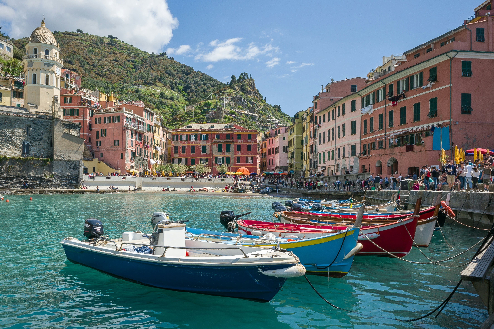
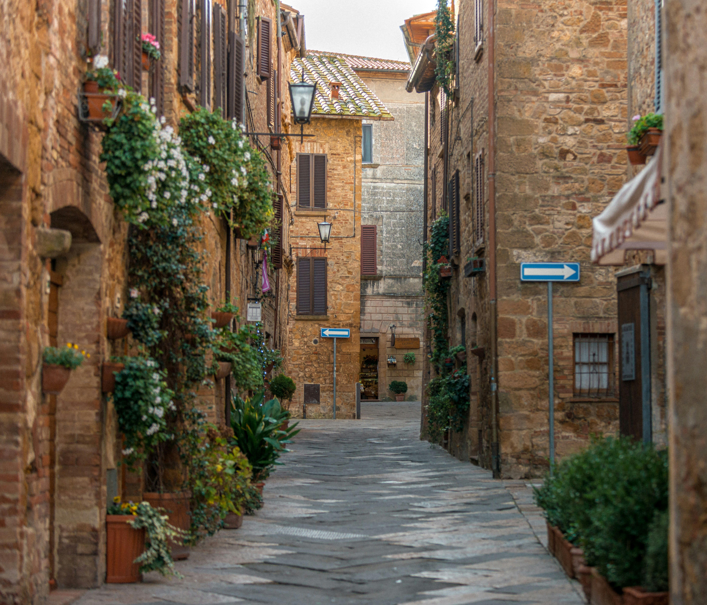
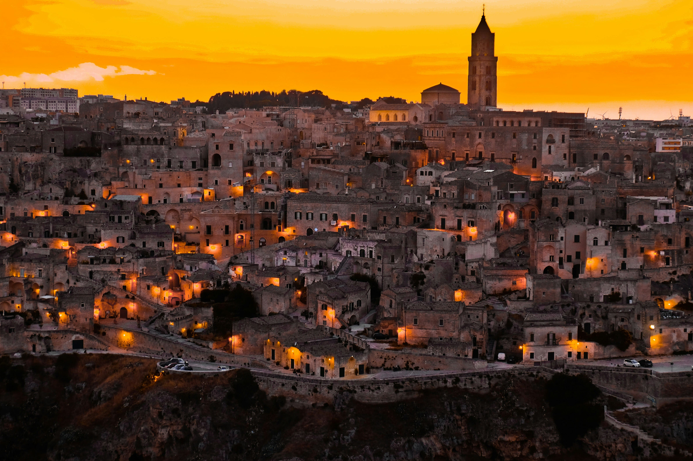

Norte de Italia
Venecia, Milán, Bolonia, Trieste y los impresionantes Lagos de Garda. Descubre la elegancia del norte italiano.
Ver más.png)
Explora rutas que conectan con la esencia italiana, más allá del turismo
EXPLORA RUTASConectamos viajeros con experiencias culturales genuinas, más allá del turismo tradicional. La riqueza de Italia radica en sus diferencias regionales. Cada región tiene su propia identidad, desde la elegancia industrial del norte hasta la pasión mediterránea del sur, esto es crucial porque permite ofrecer múltiples experiencias en un solo país.

Venecia, Milán, Bolonia, Trieste y los impresionantes Lagos de Garda. Descubre la elegancia del norte italiano.
Ver más
Toscana, viñedos, arte renacentista y pueblos medievales. La esencia de la Italia tradicional.
Ver más
Costa Amalfitana, Sicilia, Nápoles, Matera y la pasión mediterránea en su máxima expresión.
Ver másExperiencias con locales, artesanos y tradiciones genuinas
Descubre la verdadera cocina italiana región por región.
Acceso a sitios históricos con contexto cultural profundo
Turismo responsable que beneficia a comunidades locales
"Una experiencia inolvidable. Conocí la verdadera Italia, lejos de los lugares turísticos habituales."
- Katherin Nayibe Calderón, Colombia"Las rutas gastronómicas fueron excepcionales, cada comida era una historia."
- David Castillo Martínez, Chile"Conectar con artesanos locales hizo que mi viaje fuera único y significativo."
- Ana Rogerlia, ArgentinaÚnete a nuestra comunidad de viajeros apasionados por la cultura
Crea Tu Ruta Personalizada